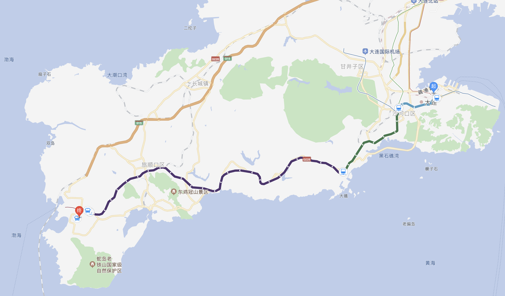
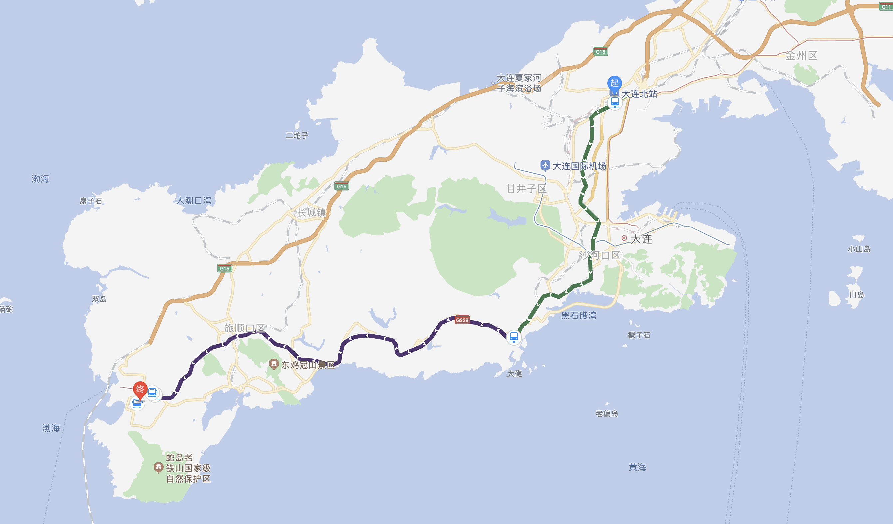
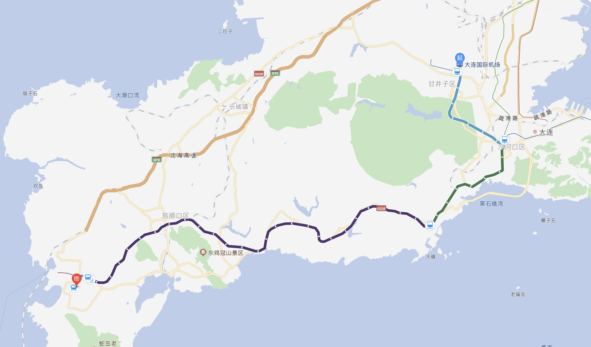

本线路图显示的是由大连地铁、大连快轨组成的公共交通线路。
大连站至大连交通大学旅顺校区
大连站至旅顺校区， 由大连站南广场出站口步行约300米到达地铁友好广场车站D出口， 乘坐地铁2号线到达西安路车站， 换乘地铁1号线至河口车站， 河口站同台换乘地铁12号线到达铁山车站， 换乘18路、212路公交航运学院车站下车步行约200米到达旅顺校区。

大连北站至大连交通大学旅顺校区
大连北站至旅顺校区， 可在大连北站乘坐地铁1号线至河口车站， 河口站同台换乘地铁12号线到达铁山车站， 换乘18路、212路公交航运学院车站下车步行约200米到达旅顺校区。

大连周水子国际机场站至大连交通大学旅顺校区
大连机场至旅顺校区， 可在大连国际机场乘坐地铁2号线到达西安路车站， 换乘地铁1号线至河口车站， 河口站同台换乘地铁12号线到达铁山车站， 换乘18路、212路公交航运学院车站下车步行约200米到达旅顺校区。

--到这里就结束了--